The bridge and the blenderizer
One standard, three ways to see it. The bridge reads X3D 4.0 nodes into Babylon.js: 158 nodes added so far, each with a fixture and a test, 53 of them pictured against X_ITE; another 68 were already in earlier ports' readers. The Blender add-on writes and reads X3D 4.0, and every export has to clear a validator and, except for two scenes whose render checks are skipped, a render diff against its baseline. Version 2 adds the physics and volume batches with new pictures, a board of what is left, and corrections from an independent fact-check of version 1. Each figure carries the tool that measured it.
The same Blender scene in two engines
Left: the X3D 4.0 file in X_ITE 16.6.0 (WebGL). Right: the glb the same add-on wrote, in Babylon.js 9.32.0 (WebGL2). Drag either to orbit.
Cycles stills exist for Asterion and Still life only. Scene files are copies from the add-on's earlier page (hagopjay/x3d-blender-io, docs/brag).
The two engines use their own default cameras and lights, so framing and exposure differ. Babylon here is plain glb loading, not the bridge reader: the bridge draws through WebGPU, and your browser may not offer it, so the bridge itself is shown through its receipts below and the existing hosted WebGPU demos on the shelf.
All 260 X3D 4.0 node types
One square per node, grouped by component. Click a square for its full note from NODES.json. Filter by status with the legend.
Nodes by their latest batch
Bridged (teal) or logged as gap (amber), from NODES.json. Each node is counted once, in the last batch that tagged it, so nodes that were re-checked later sit in their last batch only and some batch numbers show no bar. Batches 42 and 43 are both on x3d.loom main (PR 61 and PR 63). Counts show how many nodes were last worked on in each batch, not how well they match.
53 pictured receipts, Babylon beside X_ITE
Left half of each picture is the Babylon 9.32.0 bridge, right half is X_ITE 16.6.0 on the same fixture and camera.
Each picture is the best-matching shot of the node that has a picture (shots where both engines drew nothing are not eligible; every shot is in the repo at bridge/receipts/shots, which is also selection bias: the worst shots are not shown). The numbers come from the node's receipt (the latest check), and the batch on a card is the node's latest batch in NODES.json. Rig: 320x240, Chromium 153.0.8010.12 headless, SwiftShader CPU raster, no GPU timing. overlap = silhouette iou, Δ = mean absolute RGB difference (0 to 255), dB = PSNR. These are bounds, not a pixel match. Numbers cover the whole picture except for 13 shots, marked on their cards: 7 cover a box of the picture only (ImageTexture3D: the left NRRD volume, X_ITE draws the DDS one white; TriangleSet2D: left half, X_ITE culls the second triangle; TextureTransform3D: the unmoved strip; ComposedTexture3D, MultiTexture, MultiTextureTransform, ImageCubeMapTexture: the top rows where the X_ITE badge sits are left out) and 6 line and point shots widen both silhouette masks by 2 px first. The mean includes all 13.
Rigid bodies and joints: 11 nodes, batches 37 and 42
The bridge runs a small engine of its own, because X_ITE's Bullet does several things the standard does not say. Both batches are merged on x3d.loom main (batch 37: PR 56, batch 42: PR 61).
Dropped bodies
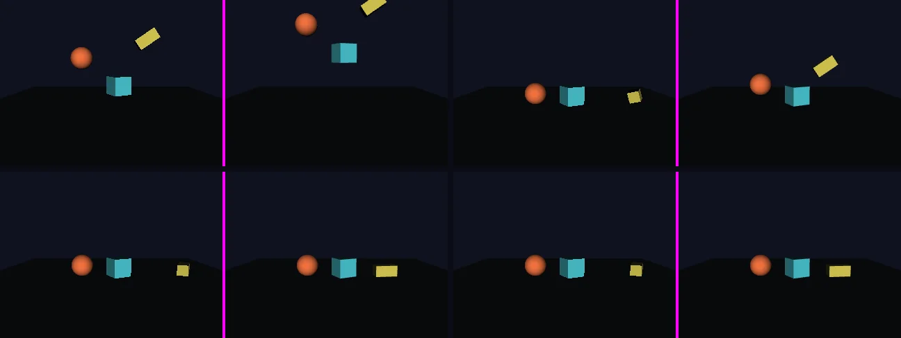
Four samples, left half Babylon bridge, right half X_ITE, in reading order t0 to t3, taken after waits of 0.2, 0.6, 1.0 and 3.0 s one after the other (about 0.2, 0.8, 1.8 and 4.8 s after load, each engine on its own clock): overlap 0.00 · Δ 6.1 · 18.8 dB · overlap 0.43 · Δ 2.5 · 22.8 dB · overlap 0.67 · Δ 1.5 · 24.7 dB · overlap 0.67 · Δ 1.5 · 24.7 dB. The two engines are in different places while the bodies fall and agree on where the sphere and cube come to rest (overlap 0.67 at the last two samples), while the thin plank lies flat in X_ITE and ends up on its end in the bridge. The bridge steps a fixed 1/240 s and X_ITE steps by its own frame time, so equal wall-clock samples do not show equal states: this is a look at behaviour, not a tracking test. A scene written for this page, not in the bridge repo; Chromium 153.0.8010.12 SwiftShader.
Hinge with limits: the clearest difference
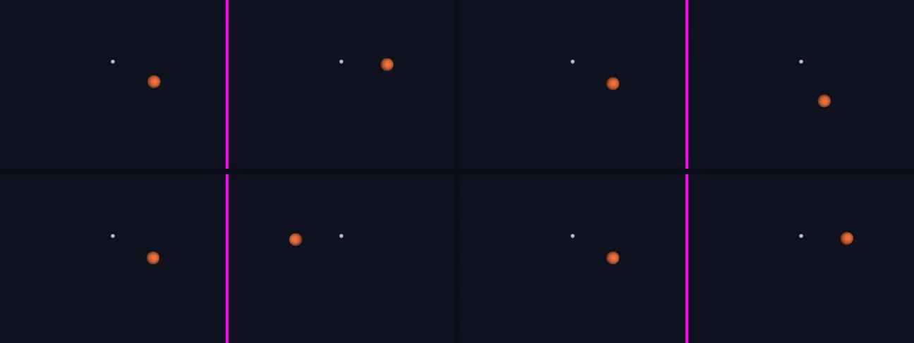
SingleAxisHingeJoint, minAngle −0.5, maxAngle 0.5 rad, ball released level. The bridge holds it against the limit (left halves, the same place at every sample); X_ITE 16.6.0 builds a hinge constraint without limits, so its ball swings through (right halves): overlap 0.05 · Δ 0.6 · 29.3 dB at all four samples. The small white sphere is the fixed anchor the pendulum hangs from. Samples are taken after waits of 0.2, 0.5, 0.8 and 2.0 s one after the other. Overlap is 0.05 at every sample because the ball is in a different place in each engine.
How the engine works (batch 37)
- About 230 lines of plain JavaScript, no download: fixed 1/240 s steps, semi-implicit Euler, sequential impulses (10 iterations), Coulomb friction.
- Exact contacts for sphere, box and sphere-box; box-box by separating axis; cylinder and cone stand in as a bounding sphere. Inertia comes from the shapes, the
inertiafield is ignored, as in X_ITE. - Bodies raise position and orientation as events, so a ROUTE to a Transform moves the scene in either engine.
- Joints are velocity rows in the same contact loop (point, align, perpendicular, lock, one-sided limit, capped motor).
Source: x3d.webgpu/bridge/WHY-physics-batch.md and WHY-joints-batch.md.
What X_ITE 16.6.0 does that the standard doesn't say (measured)
- Friction is multiplied: a box sliding at 4 m/s goes 3.27 m in X_ITE against 1.63 m with mu 0.5.
- The spec spelling FRICTION_COEFFICIENT-2 (hyphen) is ignored; X_ITE reads an underscore spelling.
- Nothing bounces off a fixed body unless minBounceSpeed is 0.
- A shape's translation is read only after its first event: a CollidableOffset ball rests at 0.5 in X_ITE and 1.5 in the bridge (each engine is checked against its own value).
- Hinge limits, slider force and motors are not applied; UniversalJoint and MotorJoint are not supported; axis2 of a double-axis hinge does nothing.
The eleven nodes
| Node | batch | ours | X_ITE | What differs, from the batch receipt |
|---|---|---|---|---|
| RigidBodyCollection | 37 | 17/17 | 17/17 | the bridge engine is its own: sequential impulses at 240 Hz, spheres and boxes (cylinder and cone stand in as bounding spheres), one friction and bounce for the whole collectionfull noteautoDisable, disableTime and the disable speeds are kept but never put a body to sleep; centerOfMass is kept and not used; joints come in their own batch; contactSurfaceThickness, preferAccuracy and set_contacts are kept; CollisionSensor/Contact nodes come later |
| RigidBody | 37 | 10/10 | 10/10 | the bridge engine is its own (see RigidBodyCollection)full notethe inertia field is ignored, the inertia is worked out from the shapes, as X_ITE's Bullet does; centerOfMass, finiteRotationAxis, useFiniteRotation, autoDamp, autoDisable and massDensityModel are kept but have no effect |
| CollidableShape | 37 | 3/3 | 3/3 | box and sphere shapes are exactfull notecylinder and cone use their bounding sphere; indexed face sets and other geometry are not collided; a shape's own translation and rotation are used; enabled is read when the world is built |
| CollidableOffset | 37 | 2/2 | 2/2 | X_ITE 16.6.0 reads the translation and rotation of a CollidableOffset or CollidableShape only when the node first receives an event: a file that sets them and never touches them leaves the shape at the body origin so there it rests at 0.5 where the bridge rests at 1.5 (each engine is checked against its own value)full notethe bridge applies them from the start; only translation and rotation of the offset are applied; the offset of an offset adds up |
| CollisionCollection | 37 | 9/9 | 9/9 | friction is one Coulomb coefficient for each contact (frictionCoefficients.x, or 0.5 when FRICTION_COEFFICIENT-2 is not applied)full noteX_ITE 16.6.0 multiplies the two bodies' values, so it slides twice as far here (3.27 m against 1.63 m); X_ITE 16.6.0 sets a body's restitution only if the body's own speed is at least minBounceSpeed when the bounce is configured, and a fixed wall or ground has speed 0, so nothing bounces off it unless minBounceSpeed is 0 (the fixture sets 0); the bridge bounces when the speed of the contact reaches minBounceSpeed; X_ITE 16.6.0 only knows the appliedParameters spelling FRICTION_COEFFICIENT_2, the 4.0 XSD and spec say FRICTION_COEFFICIENT-2, so a valid scene never gets its friction in X_ITE; surfaceSpeed, slipFactors, softnessConstantForceMix, softnessErrorCorrection and the second friction value (rolling friction in Bullet) are kept and not used; collidables is kept and not used: bodies collide through their own geometry, as in X_ITE |
| BallJoint | 42 | 7/7 | 7/7 | the bridge solves joints as velocity rows with a 0.2 per step error correctionfull notea long chain of joints needs more iterations; anchor outputs are local to each body, as in X_ITE; changing anchorPoint after load does not move the joint (it is fixed from the initial poses); forceOutput ALL raises every output of the node |
| SingleAxisHingeJoint | 42 | 9/9 | 9/9 | minAngle, maxAngle, stopBounce and stopErrorCorrection are applied by the bridge (one-sided limit rows)full noteX_ITE 16.6.0 makes a btHingeConstraint without limits, so it ignores them (see the limit fixture lines); angle is signed in the bridge and unsigned in X_ITE (the angle of the axis-angle rotation); angleRate comes from the angle change over the time since the last tick; X_ITE multiplies by the frame rate |
| SliderJoint | 42 | 6/6 | 6/6 | separation is measured along the axis between the two body origins, as in X_ITE's sliderfull notesliderForce is applied by the bridge as a force along the axis; X_ITE 16.6.0 reads the field and never applies it; stopBounce is kept and not used by the slider |
| DoubleAxisHingeJoint | 42 | 7/7 | 6/6 | the bridge builds the hinge-2 joint (anchors meet, the axes stay at 90 degrees, a motor and limit on each)full noteX_ITE 16.6.0 builds a plain btHingeConstraint about axis1, so axis2 does nothing there; desiredAngularVelocity1 and 2 with maxTorque1 and 2 turn the hinges in the bridge; X_ITE ignores them; suspensionForce and suspensionErrorCorrection are kept and not used |
| UniversalJoint | 42 | 5/5 | 4/4 | X_ITE 16.6.0 does not support UniversalJoint or MotorJointfull notethe bridge solves them (anchors meet, axes at 90 degrees); stop1Bounce, stop1ErrorCorrection, stop2Bounce and stop2ErrorCorrection are kept and not used |
| MotorJoint | 42 | 5/5 | 5/5 | the bridge applies axisNTorque about motorNAxis (fixed in body 1) on body 2 and the opposite on body 1 for the first enabledAxes axesfull noteautoCalc and the stop bounce and error correction fields are kept and not used; motorNAngle is the signed twist of body 2 about each axis; X_ITE 16.6.0 has no motor at all |
Counts are test steps passed in our reader and in X_ITE 16.6.0 (Chromium 153.0.8010.12 SwiftShader, Babylon 9.32.0). Boxes and spheres only are exact; no sleeping; no mesh collision. CollisionSpace and Contact are to do, and CollisionSensor is blocked until they exist (see the board below). No real-GPU timing exists.
Ten volume nodes, one ray marcher on X_ITE's own planes
Batch 43 is x3d.loom PR 63, merged into main on 14 Nov at 22:23Z; the numbers here are from its head, 7bca6e3.
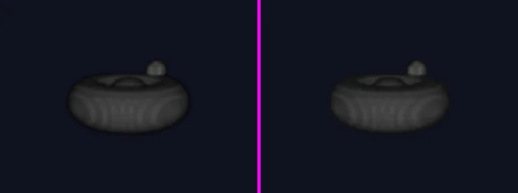
mean colour of drawn pixels: bridge (56, 56, 56), X_ITE (56, 56, 56)
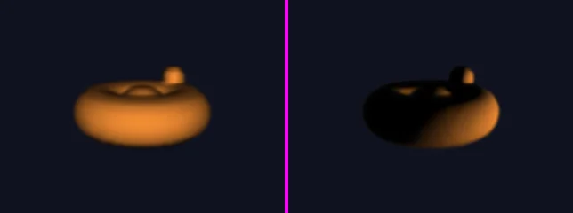
mean colour of drawn pixels: bridge (149, 86, 32), X_ITE (45, 26, 10)
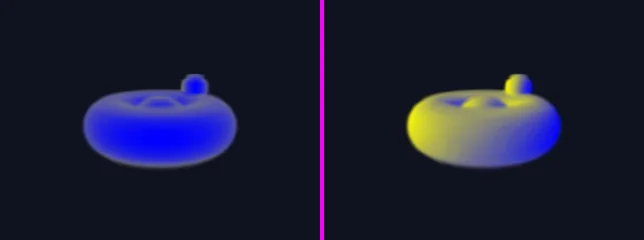
mean colour of drawn pixels: bridge (48, 48, 196), X_ITE (120, 120, 123)
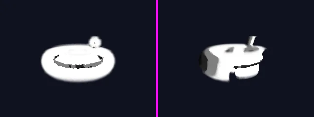
mean colour of drawn pixels: bridge (224, 224, 225), X_ITE (209, 209, 210)
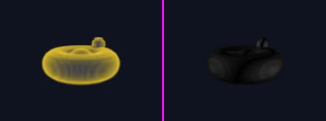
mean colour of drawn pixels: bridge (137, 121, 50), X_ITE (13, 13, 13)
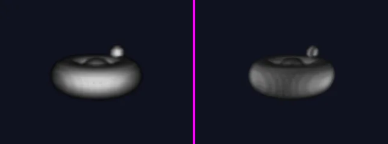
mean colour of drawn pixels: bridge (115, 115, 115), X_ITE (79, 79, 79)
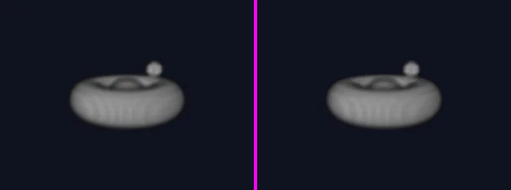
mean colour of drawn pixels: bridge (108, 108, 108), X_ITE (108, 108, 108)
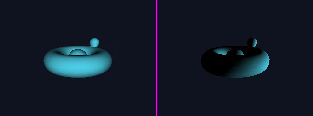
mean colour of drawn pixels: bridge (53, 140, 158), X_ITE (14, 38, 43)
One 32 x 32 x 32 voxel field (a torus, a core and a satellite, smooth edges with an empty margin so every style has a gradient), drawn by each style in both engines: bridge left half, X_ITE right half. Scenes written for this page (not in the bridge repo), Chromium 153.0.8010.12 SwiftShader, X_ITE 16.6.0, Babylon 9.32.0, 320x240. Silhouette uses retained opacity 0.08, boundary opacity 1 and sharpness 1.5 (with its default values it draws exactly the default style's picture in both engines, measured), Edge uses edge colour 1 0.85 0.2 and threshold 0.1, the other styles use their defaults. The batch's own fixtures are 8-voxel test cubes checked on pixel probes; this richer volume is a new measurement.
Reading the numbers. Close match (mean |Δ| under 1/255): Default style (opacity ramp) (overlap 0.98, Δ 0.2), BoundaryEnhancementVolumeStyle (overlap 0.99, Δ 0.1). Same silhouette, different colour or brightness: ShadedVolumeStyle (overlap 0.92, Δ 9.2), ToneMappedVolumeStyle (overlap 0.99, Δ 11.1), SilhouetteEnhancementVolumeStyle (overlap 0.92, Δ 5.0). Different shape as well: CartoonVolumeStyle (overlap 0.72, Δ 11.3), EdgeEnhancementVolumeStyle (overlap 0.16, Δ 12.1), IsoSurfaceVolumeData at 0.35 (overlap 0.82, Δ 9.6). Every picture above is of a volume turned 0.7 rad about the vertical axis and seen from a camera tilted down 0.25 rad. Smooth fields also draw as dim shells in both engines (the default style averages 56 of 255 on the pixels it draws): neither engine corrects opacity for the spacing of its 400 slices, as the bridge lane’s own check also found.
Turning the volume changes X_ITE’s lighting, not the bridge’s
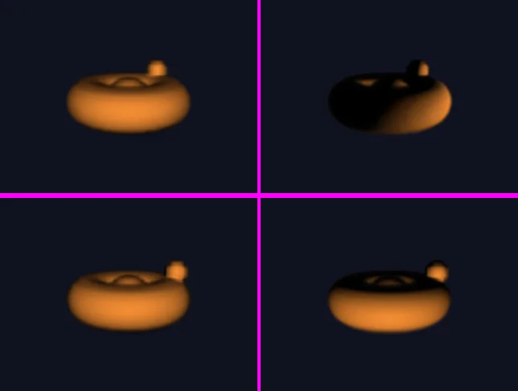
mean colour of drawn pixels, turned to not turned: bridge (149, 86, 32) to (149, 86, 32), X_ITE (45, 26, 10) to (116, 67, 25)
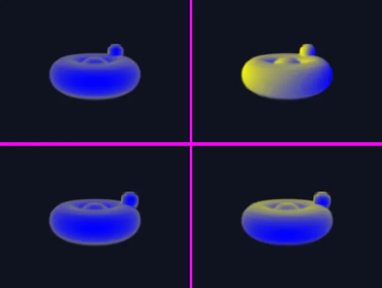
mean colour of drawn pixels, turned to not turned: bridge (48, 48, 196) to (49, 49, 195), X_ITE (120, 120, 123) to (70, 70, 173)
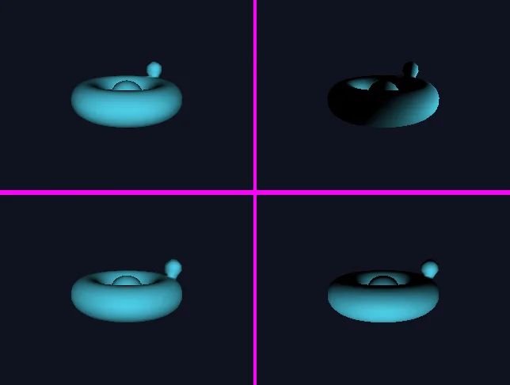
mean colour of drawn pixels, turned to not turned: bridge (53, 140, 158) to (52, 139, 156), X_ITE (14, 38, 43) to (41, 111, 124)
What the twins show. The batch fixtures check lit styles on flat cube faces; they did not turn a smooth field. A torus looks the same after a turn about its own axis (the small satellite sphere aside), and a headlight lights it the same way. The bridge does: the mean colour of the pixels it draws moves by 0, 1 and 2 levels (Shaded, ToneMapped, iso surface) between the turned and not-turned scene. X_ITE 16.6.0 does not: its mean moves by 71, 50 and 81 levels, and its picture changes from a left-to-right pattern to a top-to-bottom one. Not turned, the two engines are much closer (mean |Δ| 4.6, 4.8, 4.5, against 9.2, 11.1, 9.6 turned). The Babylon bridge lane’s own check found the same: unrotated, Shaded and ToneMapped agree within about 8 to 12 levels, and the gap appears when a Transform turns the volume. Suspected cause, from that lane and not isolated here: the sign or frame of the gradient under rotation. That fits a headlight and the bridge’s behaviour, but X_ITE is the reference engine and this page does not rule on which is right. Edge and Cartoon were not re-run not turned.
How X_ITE draws a volume, and what the bridge copies
- 400 flat quads facing the viewer, spaced |dimensions| / 399, with no correction for slice spacing; the bridge marches one ray on exactly those planes, in float.
- A hidden default OpacityMapVolumeStyle runs first: a voxel (r, g, b, a) becomes (r, r, r, r), so a red voxel is drawn white and a green one transparent.
- A volume with no voxels is a white box; a user opacity map reads its table on the diagonal.
- ToneMapped: facing the light is the cool colour. Cartoon measures its angle from eye to sample, so front faces drop.
- X_ITE blends 8 bit per slice and the bridge in float: a faint stack comes out 10 in the bridge and 24 in X_ITE.
- X_ITE does not take a changed transfer function picture after load; the bridge does.
Source: x3d.webgpu/bridge/WHY-volume-batch.md, X_ITE 16.6.0 read in source and measured.
Not done in volume
- BlendedVolumeStyle, ComposedVolumeStyle, ProjectionVolumeStyle (to do).
- Fog and clip planes; per-pixel cutting by opaque shapes through a volume; light attenuation, radius and cones (only the headlight and up to three more lights act).
- contourStepSize on an iso surface: X_ITE tests only the lowest contour, the bridge keeps the field unused.
- shadows and phaseFunction are kept and unused (X_ITE ignores them too).
- No real-GPU frame time exists; 400 planes or ray steps on a CPU raster say nothing about a GPU.
The ten nodes
| Node | batch | ours | X_ITE | What differs, from the batch receipt |
|---|---|---|---|---|
| VolumeData | 43 | 30/30 | 30/30 | X_ITE 16.6.0 draws 400 view-aligned slices with no opacity correctionfull notethe bridge marches a ray on the same planes but accumulates in float where X_ITE blends 8 bit per slice, so a volume of faint alpha differs by tens of levels (the tests check saturated colours); bboxSize and bboxCenter are kept and change nothing (they only matter for culling, as in X_ITE); opaque shapes that cut through a volume are not cut per pixel (the box is depth tested as a whole); fog and clip planes are not applied to the volume |
| IsoSurfaceVolumeData | 43 | 18/18 | 18/18 | X_ITE 16.6.0 draws the 'surface' as every sample above the value (a first-hit march), flat grey and unlit unless a renderStyle is givenfull notecontourStepSize with a surface value is not applied: X_ITE 16.6.0 tests only the lowest contour of its generated list, which is not the specification's meaning, so the bridge leaves the field kept and unused; the voxels and gradients events after load are honoured by the bridge, ignored by X_ITE |
| SegmentedVolumeData | 43 | 11/11 | 11/11 | X_ITE reads the segment as int(r * 255), which truncatesfull notethe bridge rounds (no difference for exact ids, and none for a 1 voxel texture of ids with nearest filtering); the segment ids are read through the texture's own filtering, so a segmentIdentifiers volume of 16 or more voxels across is blended at the segment borders in both engines |
| OpacityMapVolumeStyle | 43 | 19/19 | 19/19 | the 4.0 XSD lacks transferFunction in its containerField enumeration (the fixture is checked against a copy that has it)full noteonly a PixelTexture is read as a 2D transfer function (an ImageTexture is not: the white texel stands in); a 3D transfer function (PixelTexture3D, ComposedTexture3D, ImageTexture3D) is read as X_ITE does, at (r, r, r); X_ITE reads the table at (r, g) of the colour the default ramp already made, which is (r, r): the spec's intensity against gradient is not what 16.6.0 does and the bridge copies 16.6.0; a changed transfer function picture is taken up by the bridge and not by X_ITE 16.6.0 (measured: a PixelTexture image written after load changes nothing there, a toggle of enabled does not help); the 2D transfer function repeats in X_ITE unless repeatS and repeatT are false: voxel 255 then lands on texel 0 (the fixture sets repeatS and repeatT to false) |
| ShadedVolumeStyle | 43 | 19/19 | 19/19 | the gradient is taken one voxel either side of the sample in the red channel, so a volume with no empty margin has no gradient at its border and draws nothing (as in X_ITE)full noteonly the headlight and up to three more lights act; their attenuation, radius and spot cone are not applied (X_ITE applies them); shadows and phaseFunction are kept and not used (X_ITE does not use them either); anisotropic dimensions tilt X_ITE's normals differently from the bridge's (the bridge divides the gradient by the dimensions); the test uses a cube |
| ToneMappedVolumeStyle | 43 | 11/11 | 11/11 | the colours' alpha is not used (the voxel alpha stays)full notewith no light the colour is black; only the headlight and up to three more lights act, with no attenuation or cone |
| CartoonVolumeStyle | 43 | 11/11 | 11/11 | X_ITE measures the angle against the direction eye to sample (not sample to eye), so the faces turned towards the eye are dropped and the far side of the cube showsfull notethe bridge copies that (a convex cube looks the same either way); colorSteps 4 puts the 45 degree band exactly on a band edge, so it is not tested; the colours' alpha is not used |
| BoundaryEnhancementVolumeStyle | 43 | 14/14 | 14/14 | the numbers depend on the 400 slice count and the 8 bit blend of X_ITE for faint samplesfull notethe bridge adds up the same alpha in float, the tolerance is 10 levels; pow(0, 0) is hardware defined and is not tested; the surfaceNormals field does not exist on this node |
| EdgeEnhancementVolumeStyle | 43 | 8/8 | 8/8 | a flat region has no gradient and is dropped, so a constant volume draws nothing with this style (tested in the Silhouette fixture)full noteedgeColor's alpha is not used; edgeColor mixing needs a normal that is not along the view axis; it is covered by the formula and the rotated-view test is left to the next batch |
| SilhouetteEnhancementVolumeStyle | 43 | 10/10 | 10/10 | a constant volume draws nothing with this style whatever the parameters (X_ITE 16.6.0 drops every sample with no gradient)full notethe opacity is the alpha of a sample times the factor; nearly-saturating stacks hide small errors, so the faint case is the one that discriminates |
Counts are test steps passed in our reader and in X_ITE 16.6.0 (batch 43 receipts at 7bca6e3). All ten are logged as gap rows (each has gaps listed in its receipt), none as clean bridged.
Where the bridge differs from X_ITE on purpose
X_ITE 16.6.0 is the reference engine. Only the first group follows the standard's maths; the others are robustness or completeness choices, our engineering calls, not quotations of the standard's text (the text of ISO/IEC 19775-1 is not in the repository). Each row is a measurement from the batch receipts.
| Node | Case | X_ITE 16.6.0 | Bridge (Babylon 9.32.0) | Source |
|---|---|---|---|---|
| FOLLOWS THE STANDARD'S MATHS, X_ITE DOES NOT | ||||
| NurbsCurve, NurbsCurve2D, NurbsPatchSurface | weighted quarter circle | radius up to 1.24 | radius 1.00 to 1e-5 (rational B-spline) | BATCH-44, fixtures run in both engines |
| NurbsPositionInterpolator | weighted point at the middle | (0.75, 0.75, 0): unweighted B-spline | (0.7071, 0.7071, 0), exact to 1e-6 | BATCH-44 |
| MORE ROBUST OR SMOOTHER (OUR CHOICE) | ||||
| NurbsPositionInterpolator | invalid curve at set_fraction | TypeError, page stops answering | no event raised | BATCH-44 |
| NurbsSet | scale 0 or below | 0 segments, NaN vertices | one cell kept | BATCH-44 |
| NurbsPatchSurface | closed surface normals | seam in normals (its own source: TODO uClosed) | smooth across the seam | BATCH-44 |
| TriangleSet2D | clockwise 2nd triangle, solid=false | culled | drawn: our reading of the 4.0 text (2D geometry has no back side), a logged deliberate difference | lane-visual log 22:30Z |
| IMPLEMENTS WHAT X_ITE 16.6.0 LEAVES OUT (PHYSICS, VOLUME) | ||||
| SingleAxisHingeJoint | minAngle / maxAngle | hinge without limits: swings through | one-sided limit rows: held at the limit (see the picture above) | BATCH-42 |
| SliderJoint, MotorJoint | sliderForce; motor axes | force never applied; no motor | applied | BATCH-42 |
| UniversalJoint, DoubleAxisHingeJoint | second axis | UniversalJoint unsupported; axis2 does nothing | solved | BATCH-42 |
| OpacityMapVolumeStyle | changed transfer function picture after load | not taken up | taken up | BATCH-43 |
Not every difference favours us. Where X_ITE wins on the scorecard (materials-world 0.1056 vs 0.1648) it is shown in the scorecard section below. A gap logged is a gap kept honest.
x3d-blender-io: every export is gated against a baseline
Blender 5.3.0 ⇄ X3D 4.0 ⇄ glb, then two engines and a validator. Source: add-on PR 44 (gate baseline), fidelity rig, 43 scenes.
Arrows are the data flow of tools/fidelity_rig/gate.py. The gate compares Babylon.js on the glb with X_ITE on the X3D (geometry delta), and X_ITE on the original X3D with X_ITE on the re-export (round-trip delta and FLIP). Cycles, EEVEE and Castle are not part of the gate; they are scorecard legs, shown below.
Gate results, 43 scenes
gate_results.json, 646.7 s, Blender 5.3.0, X_ITE 16.7.1, Chromium 153.0.8010.12 SwiftShader, flip-evaluator 1.7, add-on revision 5fb7867. Tolerances: image delta abs 0.5 / rel 5%, FLIP abs 0.01 / rel 5%, triangles rel 1%, frame share abs 0.002 / rel 10% (how much of the frame Babylon covers, and where X_ITE draws but Babylon shows only background; part of the geometry delta check). SKIP = not gated because the rig cannot measure the scene (known defect H1: X_ITE crashes the page on demo-wedgwood-unlit-textures, so both its render checks are skipped, and renders demo-material-odyssey differently on every run, so its round-trip check is skipped). Five more render checks pass without a measurement on written reasons (geometry_delta on stars-splats, demo-living-heart and demo-material-odyssey; roundtrip_delta on stars-splats and demo-living-heart): in all, 8 of the 86 render-check results measured nothing. The gate is a no-regression check against per-scene baselines: 36 of 43 scenes carry at least one known-issue entry (D1 to D13, H1) and 7 carry none. IMPROVED = a baseline number got better (demo-materials-textures, FLIP 0.06281 against the old baseline 0.07303).
sRGB: the colour round trip
| Field | Max |Δ| | Pairs |
|---|---|---|
| Material.diffuseColor | 3.2e-6 | 562 of 595 |
| Material.emissiveColor | 3.2e-6 | 594 of 633 |
| PhysicalMaterial base + emissive | 0 | 385 of 603 |
| UnlitMaterial.emissiveColor | 0 | 13 of 113 |
| ColorRGBA | 0 | lumen only (set comparison, no pair count) |
| Color (per-vertex) | 0.0676 on one scene (audit time; fixed on main) | "habsburg": dropped line colours (D12), not encoding |
Round-trip audit on harness commit acd6882 (before the D-fixes), default sRGB colour space, 43 scenes, display sRGB comparison, X_ITE 16.7.1 as the display oracle. X_ITE draws PhysicalMaterial emissive 0.5 as 186 and classic Material emissive 0.5 as 128, so the audit encodes PhysicalMaterial colours with the sRGB curve before comparing them with classic ones. Classic Material colours come back as linear PhysicalMaterial factors (0.8 to 0.603827), which X_ITE draws identically. 3.2e-6 is the 6-decimal text the writer prints. Under the As-is colour space (BLENDER_X3D_COLOR_SPACE=AS_IS) the same audit measured Material.diffuseColor 0.2870, emissiveColor 0.2871 and vertex Color 0.2832. Pairs = materials whose ordered original and re-export values were compared. At audit time Material.specularColor was dropped on 595 of 595 classic materials; D13 is fixed on main, which now writes specularColor and shininess for Material-lit scenes.
Validators in the loop
- Khronos glTF-Validator 2.0.0-dev.3.10: structure, 0 errors on 43 files
- source/validate.py (well-formed) and x3d.py 4.0.65.8 (0 errors) on each re-export: 43 of 43 pass; node types lost per scene are counted against a baseline (12 scenes lose none, 31 lose 1 to 17)
- Empty-geometry check added by the gate: the validator alone passes a glb with no triangles
Tests
628 bpy tests OK on Blender 5.3.0 (PR 44). CI runs a 9-scene subset of the gate with strict fingerprint checking.
Round trip, kept honest
All 43 re-exports are well-formed with 0 x3d.py errors (x3d.py 4.0.65.8 on each); 12 lose no node type and 31 lose 1 to 17 (121 in total, e.g. Text and FontStyle on 13 scenes), each held to its recorded baseline by the gate. The same audit found 14 defects (D1 to D14). Fixed on main: D1 (light scope), D2 (clip range), D3 (Inline url), D5 and D13 (classic Material kept, specularColor and shininess written), D6 (headlight), D7 (LOD), D8 (animation, mostly), D9, D10, D12 (line colours and widths) and D14 (solid). Open or by design: D11 text, D4 splats (PointSet in 4.0 by design; the 4.1 option writes GaussianSplats), and residuals of D7 (GeoLOD), D8 (interpolators and sequencers) and D12 (NurbsCurve).
Three renders against Blender's path tracer
Each strip: Blender Cycles reference · Babylon from the add-on's glb · X_ITE from the X3D. 512x512, 256 samples, Chromium 153 SwiftShader.
Mean FLIP vs Cycles, 15 scenes (lower is closer)
Scorecard v3 (14 Nov): flip-evaluator 1.7 LDR, Cycles 256 spp, seeds 0 and 1; noise floor of the reference 0.0033. Castle native: Castle Game Engine 7.0-alpha.3.snapshot (FPC 3.2.2) on Mesa llvmpipe (LLVM 20.1.2); Babylon (Castle glb): Babylon.js 9.32.0 on the glb the Castle exporter writes, drawn in Chromium 153 SwiftShader. Paired difference Babylon (add-on glb) minus X_ITE: −0.0228, 95% bootstrap interval [−0.0525, +0.0014], 8 wins, 7 losses. That interval touches zero: we do not claim the better score is established. Only EEVEE has an interval below zero (14 of 15). On this CPU-only rig (software GL, no GPU) its median wall time is about 60 s per scene (shader compile included), against 0.9 s for X_ITE (page load) and 0.7 s for Babylon (load plus first frames); these are not frame rates and not GPU timings. Read all of these with care. The reference is Cycles on the add-on's reading of the file, not truth. EEVEE and Babylon (add-on glb) share that reading with it, so they are not independent of the reference; X_ITE, Babylon (Castle glb) and Castle native read the file themselves. The add-on's default light units are calibrated to what X_ITE draws, so X_ITE's agreement on lit scenes is partly built in. The intervals are indicative only, because scenes are not independent.
Per scene, FLIP (X_ITE → Babylon add-on glb)
What's left, and what may come
Counts are from NODES.json at 7bca6e3, the head of PR 63 (merged into x3d.loom main 14 Nov 22:23Z). 260 = 68 baseline + 95 bridged + 63 gap + 25 to do + 8 claimed + 1 blocked.
Open in the tracker
Volume stylesto do · 3
The next volume batch.
Geospatialto do · 11
No fixture or test yet.
DISto do · 6
No fixture or test yet.
NURBS remainderto do · 3
Left for a later batch on purpose.
Physics remainderto do 2 · blocked 1
CollisionSensor is blocked until CollisionSpace and Contact exist.
Claimed by another laneclaimed · 8
Owned by the Library hall port thread.
Gap rows still opengap · 63
Nodes the reader draws or runs with a logged difference from X_ITE: the 53 from before PR 63 plus the ten volume nodes it added. Examples: NURBS weights follow the standard, particle emitters overlap 0.07 to 0.31, Shaders holders do not run GLSL in WebGPU.
May be coming (no commitment; only the three.js card has work behind it, the rest are placeholders)
Live bridge paneplaceholder
The bridge itself running in the browser beside X_ITE. It draws through WebGPU, which not every browser offers (a known blocklist on some Windows Chrome installs), so v2 shows it through receipts and pictures only.
Real-GPU timingplaceholder
Every picture and every test so far is on a CPU rasteriser. No frame time exists; this card stays empty until a run on a real GPU is made.
three.js portscaffold exists
Asked 14 Nov: how hard a port is, and a scaffold. Another thread built one: x3d.loom x3d.threejs/bridge (PR 64 merged 14 Nov 22:30Z, with an ESTIMATE.md by node group; batch 1, PR 65, merged 22:46Z). Per PR 65: 23 of 260 nodes drawn, 29 reader-checked, 49 reader, 122 to do, 37 waiting on the Babylon batches (Chromium 153.0.8010.12 SwiftShader, X_ITE 16.6.0, three.js r187). No three.js pictures on this page yet.
More volume and physics picturesplaceholder
The pictures here are the first. Lit styles on a smooth field depend on whether the volume is turned in X_ITE and not in the bridge (the bridge lane is writing this up for batch 45; cause not isolated); Edge and Cartoon differ and were only drawn turned; joints other than the hinge have no picture yet; the other volume nodes (Segmented, a user opacity map) have none either.
Blenderizer: text, splats, more scenesplaceholder
Open on the add-on side: Text (D11), splats (D4: PointSet in 4.0 by design; the 4.1 option writes GaussianSplats), residuals of GeoLOD (D7), interpolators and sequencers (D8) and NurbsCurve (D12), and a scorecard wider than 15 scenes. On the bridge side its CI reference job times out on main (the required event step is green).
Your placeholderplaceholder
Cards here are not promises. Anything that should sit on this board can be added from NODES.json or by hand.